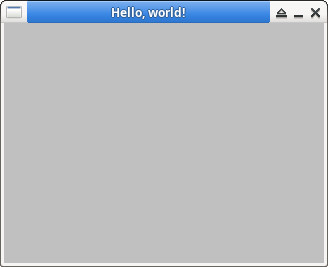

參考資訊：
https://www.fltk.org/doc-1.3/index.html
#include <iostream>
#include <FL/Fl.H>
#include <FL/Fl_Window.H>
int main(int argc, char **argv)
{
Fl_Window *window = new Fl_Window(320, 240, "Hello, world!");
window->show(argc, argv);
return Fl::run();
}
編譯、執行
$ g++ main.cpp -o main -lfltk $ ./main
